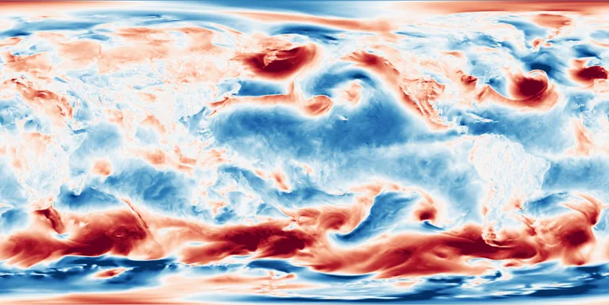

Benchmark / Near-lossless / era5-u10-1h / era5-u10-1h-02
era5-u10-1h-02
2023-03-26 · sample details
Each point shows a configuration at this budget level. The line shows the best observed trade-offs. The All corpora view pools size and decode time across samples for configurations completed on every corpus with results at this level. Broken promises are listed below.
